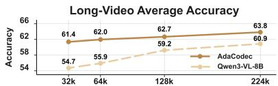

Deployable Model Figure 2: AdaCodec method overviewDeployable Model Figure 2: AdaCodec method overview. Left: Motion-and-residual encoding for a P-frame. For each macroblock in the target frame, AdaCodec searches a local window in the reference frame for the best-matching block; the displacement gives the motion vector and the per-pixel difference gives the residual. Right: Deployable model. Each GOP encodes its I-frame with the ViT and each P-frame with the P-tokenizer.这张图概括 AdaCodec 的整体方法流程。阅读时先看模块之间传递的训练信号，再看作者如何把目标拆成可优化的子问题。

Figureure 1 · AdaCodec treats the video MLLM visual interface as a predictive code: Figure 1. AdaCodec treats the video MLLM visual interface as a predictive code: a frame is encoded into full visual tokens only when it cannot be predicted from prior context, and intermediate frames are sent as compact motion-and-residual P-tokens. Left: AdaCodec splits the video into adaptive Groups of Pictures (GOPs), each containing one I-frame (intra-coded frame, encoded independently) followed by a chain of Pframes (predictive frames). AdaCodec places I-frames adaptively via a pcost threshold on per-frame predictive cost, encodes each I-frame into full ViT tokens, and encodes each intermediate P-frame into fewer compact motion-and-residual tokens produced by the P-tokenizer. Right: AdaCodec matches or surpasses Qwen3-VL-8B on all eleven benchmarks even at 1/7 the tokens, cuts time-to-first-token (TTFT) and end-to-end latency (E2EL) while raising average accuracy, and leads on long-video accuracy across token budgets from 32k to 224k.这张图/表用于判断 AdaCodec 的实验收益来自哪里。重点看替换、消融或跨模型设置下趋势是否一致，而不是只看单个最高分。